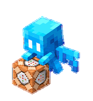
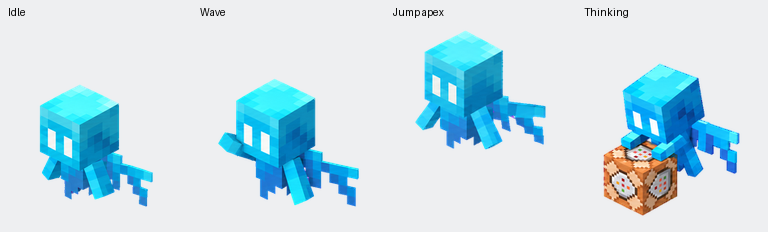

Minecraft-inspired desktop companion
Allay.
Mały pomocnik do wielkich zadań.
Gdy pracujesz, on obsługuje command block.




Przycisk otworzy okno dodawania peta w obsługiwanej aplikacji ChatGPT desktop / Codex. Potwierdź dodanie w aplikacji. Nie musisz instalować skryptów ani podawać żadnych kluczy.
Trzy kroki i gotowe
- Kliknij Dodaj Allaya i zezwól na otwarcie aplikacji.
- Potwierdź instalację, a potem wybierz Allaya w ustawieniach Pets.
- Jeśli pet jest ukryty, wybierz Show pet / Pokaż peta lub wpisz /pet.
Przycisk nie reaguje? Zaktualizuj aplikację lub dodaj pobrany PNG przez Upload pet, jeśli ta opcja jest dostępna. Importer wymaga 1536×1872? Pobierz wersję v1 bez dodatkowych kierunków patrzenia.